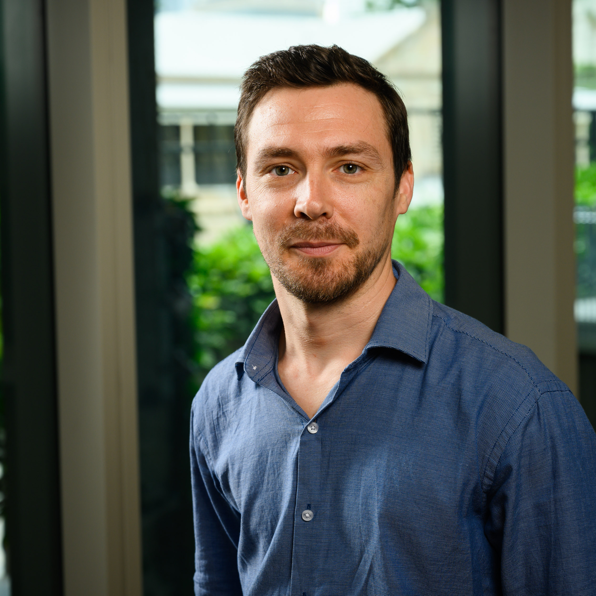
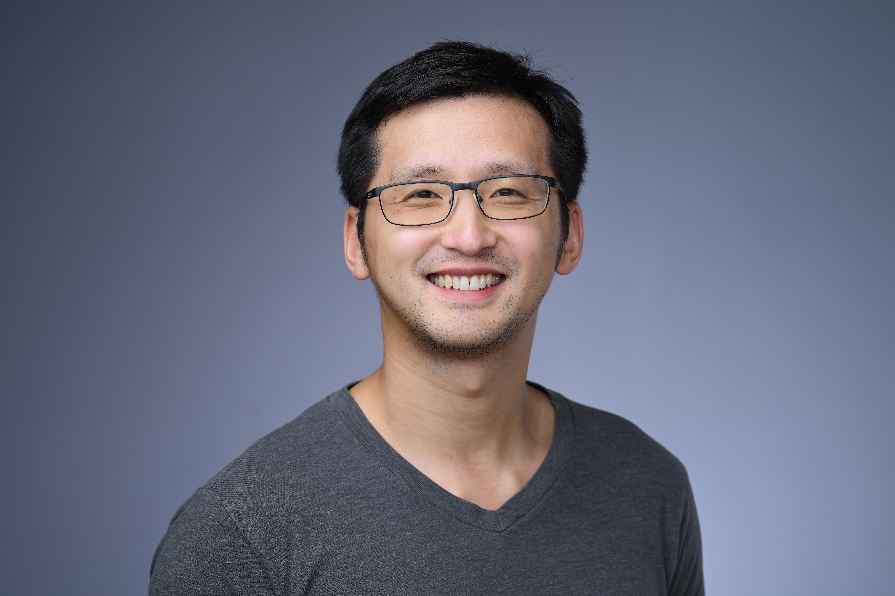
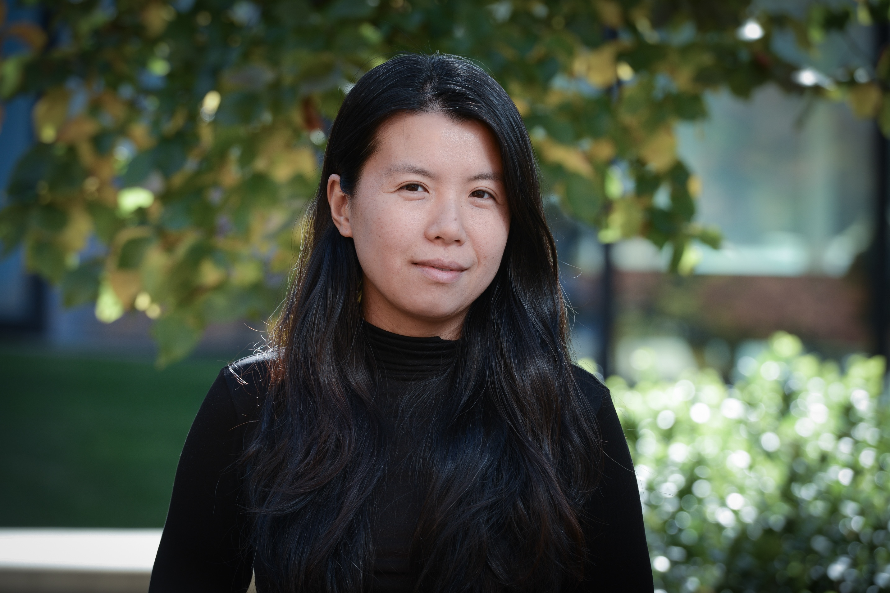

Current BayesComp-ISBA board members
Anirban Bhattacharya. Section Chair-Elect 2023-2025.
Anirban is a Professor in the Department of Statistics at Texas A&M University, College Station, TX. Anirban's work focuses on methodological, theoretical, and computational aspects of modern Bayesian statistics and machine learning. For more information, visit his website.
Chris Drovandi. Section Chair-Elect 2026-2028.

Chris is a Professor in the School of Mathematical Sciences at the Queensland University of Technology, Australia. Chris is interested in Bayesian algorithms for complex models, optimal Bayesian experimental design methods, and the translation of Bayesian methods across many disciplines. For more information, visit his website.
Yang Ni. Program Chair 2026-2027.

Yang is an Associate Professor in the Department of Statistics and Data Sciences at the University of Texas at Austin. Yang's research focuses on causal discovery, graphical models, and Bayesian nonparametrics with applications to cancer multi-omics, HIV electronic health records, and mental health. For more information, visit his website.
Susan Wei. Treasurer 2025–2027.

Susan is an Associate Professor at Monash University. Her research focuses on statistical machine learning, especially Bayesian deep learning and singular learning theory. More at suswei.com.
Akihiko Nishimura. Secretary 2025-2027.
Aki is an Assistant Professor of Biostatistics at Johns Hopkins University. His work centers on developing Bayesian (and occasionally non-Bayesian) methods and computational tools for analyzing large complex biomedical data, with particular emphasis on health data analytics and statistical genetics. For more information, visit his website.